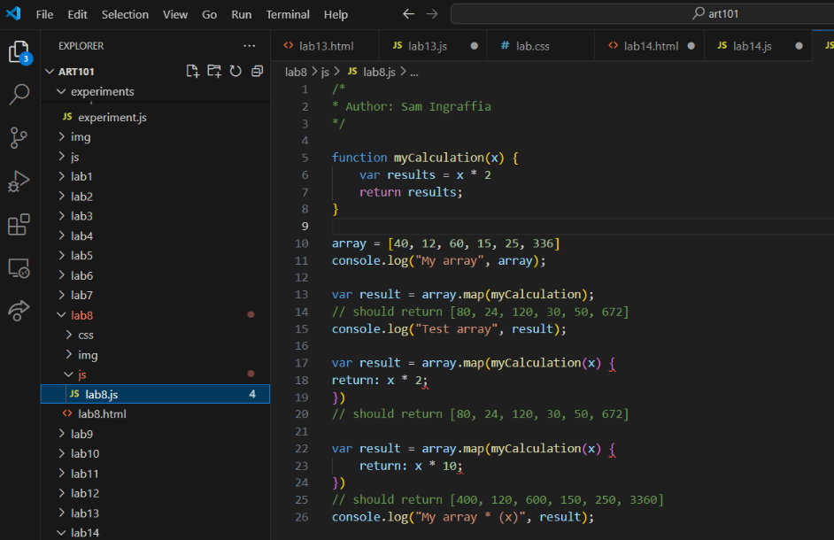
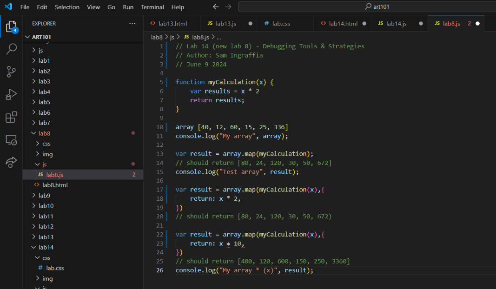

Lab 14: Debugging Tools & Strategies
Challenge
This lab challenged us to debug our previous JavaScript files that were not working or had issues within our code. We were tasked with debugging our previous labs and fixing any problems we encountered with our code.
Problems
This lab was pretty simple, only one the my JavaScript files needed to be addressed due to some typos that VScode flagged. I also made some changes to my CSS file because it was using the wrong one.
Results: Debugging
 My Lab 8 JavaScript file had some typos within the code that needed to get fixed. Lines 18,20,23,25 had incorrect punctuation. Other than these problems, the code was working fine. I also made some changes to my CSS file because some things were not appearing on my GitHub webpage when the Lab 8 link was clicked.